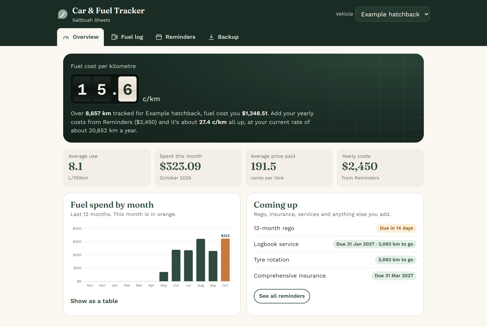

10 ways to cut your fuel bill in Australia
Practical things you can do this week, from finding the cheapest servo near you to keeping your tyres right. No sign-up needed.
Check the price before you fill
Prices can differ a lot between servos in the same suburb. Use your state’s official source:
- WA: FuelWatch (website and app), with tomorrow’s prices as well as today’s
- NSW and ACT: FuelCheck (website and app)
- Victoria: Servo Saver, in the Service Victoria app
- Tasmania: FuelCheck TAS (website and app)
- Northern Territory: MyFuel NT (website)
- Queensland and SA: the state government publishes a list of approved fuel price apps and websites
Supermarket dockets and member discounts can help too; compare them with the cheapest nearby price.
Learn your city’s price cycle
In some cities, petrol prices rise and fall in a pattern. Perth has had a weekly unleaded cycle, and FuelWatch shows tomorrow’s prices so you can pick your day. Cycles in other big cities have changed in 2026, so check the ACCC’s current buying tips. Diesel doesn’t follow these cycles.
Buy the fuel your car needs
Check the owner’s manual or the label inside the fuel flap. If your car is fine on regular unleaded, premium mostly costs you more at the pump.
Keep tyres at the right pressure
The recommended pressures are on the tyre placard (often inside the driver’s door) or in the manual. Under-inflated tyres make the engine work harder. Check them when they’re cold, about once a month.
Take off what you’re not using
Empty roof racks and boxes add drag, and a boot full of gear adds weight. Both use more fuel, especially on the highway.
Drive smoothly
Gentle acceleration, looking ahead so you brake less, and a steady speed all use less fuel. On the highway, cruise control helps hold that steady speed.
Don’t idle longer than you need to
An idling engine burns fuel for zero km. If you’re parked and waiting, turning the engine off (when it’s safe) saves fuel.
Combine trips
A cold engine uses more fuel. One loop that covers the shop, the drop-off and the errands usually beats three separate short trips.
Keep up with servicing
Follow the service schedule in your manual. A well-maintained car runs as it was designed to, and a service is a good time to have the tyres checked as well.
Track your L/100km
Once you know your normal fuel use, a sudden rise is a sign to check your tyres or book a service. Logging each fill also shows whether cheap-day fills are really paying off. The Car & Fuel Tracker works this out for you.
General information only, checked 1 November 2026. Fuel price rules and apps can change, so follow the official source for your state.
See what your car really costs
Try the free calculator with your own numbers, then let the Car & Fuel Tracker work out your real cost per km from every fill. A$17 one-off.

Pages for your kind of driving: